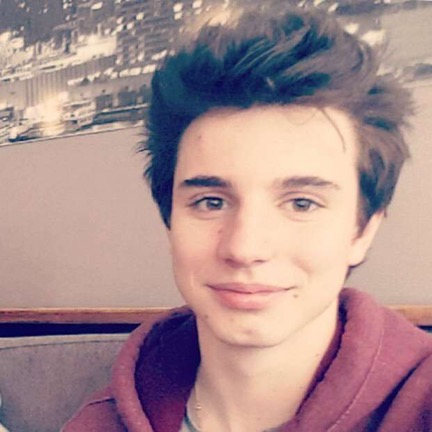

Arnaud MERLE
Présentation
Etudiant en école de commerce à l'EMLV à la Défense. Ancien étudiant en médecine.
Formation & Diplômes
- 2017 - Baccalauréat série S, mention AB
- 2019 - Examen d'entrée en médecine, dentisterie Belgique
- 2019-2021 - Bachelier médecine UCL
Mes centres d'intérêts
- Sport (tennis, surf)
- Musique (piano)
- Lecture
Me contacter
27 clos Chapelle aux champs 1200 Woluve Saint Lambert
06 54 45 84 65
arnaud.merle@edu.devinci.fr